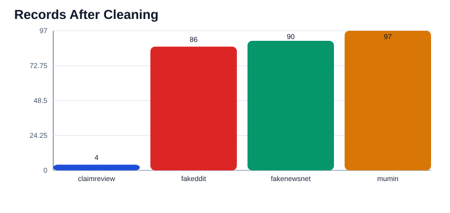
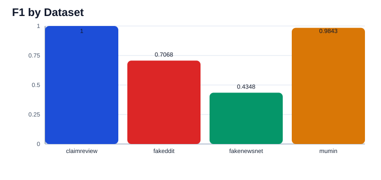
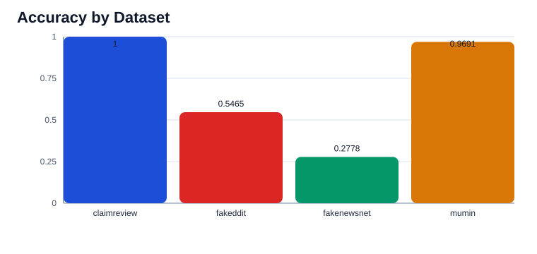
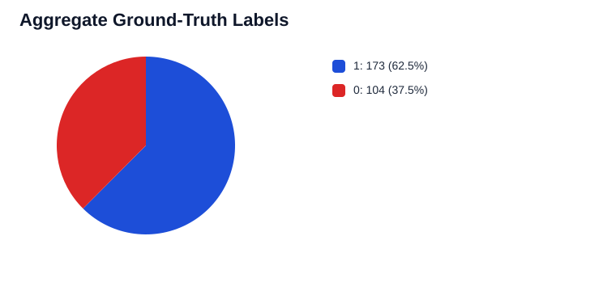

Aggregate Visualization Dashboard
Static dashboard generated by the experiment pipeline for easier inspection than raw JSON or CSV outputs.
Datasets
4
Predictions
277
Accuracy
0.6137
F1
0.7606
Records After Cleaning

F1 by Dataset

Accuracy by Dataset

Aggregate Ground-Truth Labels

Per-Dataset Metrics
| Dataset | Records | Accuracy | F1 |
|---|---|---|---|
| claimreview | 4 | 1 | 1 |
| fakeddit | 86 | 0.5465 | 0.7068 |
| fakenewsnet | 90 | 0.2778 | 0.4348 |
| mumin | 97 | 0.9691 | 0.9843 |